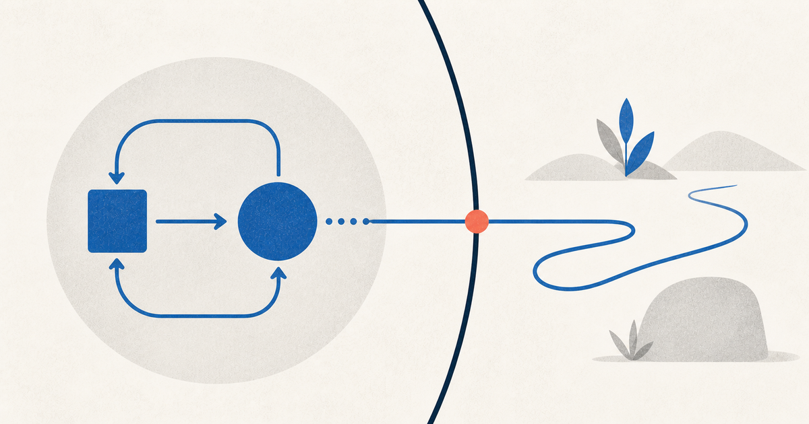

«Агент» — это кто?
Модель, программа, роль, процесс или цифровой сотрудник — почему одним словом называют разные вещи и как перестать из-за этого ошибаться.

Я заметил странную вещь: чем больше работаешь с AI-агентами, тем меньше понимаешь, что именно собеседник называет агентом.
Один говорит: «Я создал агента-архитектора». На деле он написал system prompt.
Другой говорит: «Наш агент умеет работать с GitHub». На деле приложение разрешает модели вызвать один заранее выбранный API-метод.
Третий запускает пять параллельных копий Claude Code и называет это мультиагентной системой.
Четвёртый подключает MCP-сервер и считает, что добавил ещё одного агента.
Все используют привычные слова. Но говорят о разных объектах, с разной степенью автономности и разными инженерными последствиями. Из-за этого обсуждение архитектуры быстро превращается в спор о словах, а маркетинговая демонстрация — в обещание цифрового сотрудника.
Разберёмся без магии и без попытки найти одно священное определение.
Короткий ответ
В современной AI-разработке словом «агент» называют по меньшей мере семь разных вещей:
- абстрактного субъекта, который воспринимает среду и действует в ней;
- LLM-систему, самостоятельно управляющую циклом работы;
- конфигурацию модели с инструкциями и инструментами во фреймворке;
- готовый продукт или среду исполнения вроде coding agent;
- отдельный запущенный процесс, сессию или worker;
- роль или персону, заданную промптом;
- участника организационной схемы, изображающего специалиста или отдел.
Это не семь конкурирующих определений одного объекта. Это семь уровней описания. Путаница начинается, когда свойство одного уровня молча переносят на другой.
Например:
«В SDK этот объект называется Agent»
↓ ошибочный перенос
«Значит, система автономно доводит задачу до результата»Название класса ничего не доказывает про автономность работающей системы. А промпт «ты senior-разработчик» не создаёт нового независимого исполнителя.
Откуда вообще взялся агент
Слово agent старше языковых моделей и даже старше компьютеров. В обычном смысле агент — тот, кто действует от чьего-то имени: представитель, посредник, исполнитель поручения. В центре понятия не интеллект, а отношение:
принципал → поручает → агент → действует в средеВ классическом искусственном интеллекте понятие стало техническим. В статье 1995 года Майкл Вулдридж и Николас Дженнингс описывали интеллектуального агента через четыре свойства: автономность, реактивность, проактивность и социальную способность. Агент контролирует хотя бы часть своих действий, реагирует на изменения среды, проявляет инициативу ради цели и способен взаимодействовать с другими участниками. Это определение появилось задолго до нынешней волны LLM-агентов. Wooldridge & Jennings, Intelligent Agents: Theory and Practice
Базовая схема выглядела примерно так:
наблюдение
среда ─────────────────────────▶ агент
▲ │
│ │ выбор действия
└────────────────────────────────┘
действиеУ агента есть граница, среда, входящие наблюдения, внутреннее состояние или политика выбора и возможность воздействовать на среду. Это удобная фундаментальная модель: термостат, игровой бот, робот и coding agent сильно отличаются по интеллекту, но все могут рассматриваться через цикл «наблюдать — выбирать — действовать».
LLM не изобрели агентность. Они дали этому циклу необычно универсальный механизм принятия решений: языковую модель, способную интерпретировать цель, выбирать инструменты, читать результаты и менять следующий шаг.
Почему сегодня нет одного определения
Потому что «агент» одновременно стал научным понятием, архитектурным паттерном, названием программной абстракции и маркетинговой категорией.
Даже в документации одного поставщика граница может проходить в разных местах.
В практическом руководстве OpenAI агент определяется строго: это система, которая с высокой степенью самостоятельности выполняет задачу от имени пользователя, управляет ходом работы и динамически выбирает инструменты. Простой чат-бот или одиночный вызов модели агентом там не считается. OpenAI, A practical guide to building agents
Но в документации OpenAI Agents SDK слово используется шире: Agent — это LLM, сконфигурированная инструкциями, инструментами, guardrails, handoffs и форматом выхода. Цикл выполнения при этом находится в Runner. OpenAI Agents SDK, Agents
Anthropic проводит ещё одну полезную границу:
- workflow — путь заранее определён кодом;
- agent — модель сама динамически определяет процесс и использование инструментов.
При этом оба варианта Anthropic относит к более широкой категории agentic systems. Anthropic, Building effective agents
Здесь нет логического противоречия. Документ о продуктовой архитектуре отвечает на вопрос «какая система ведёт задачу?», а документация SDK — «как называется объект в API?». Ошибка возникает у нас, если мы не уточняем уровень.
Семь значений слова «агент»
1. Агент как абстрактный субъект действия
Это самое широкое и старое техническое значение.
Агент:
- получает наблюдения из среды;
- имеет цель или критерий поведения;
- выбирает действие;
- воздействует на среду;
- продолжает цикл с учётом результата.
Такое определение не требует LLM. Агентом может быть программа на правилах, reinforcement learning policy, робот или гибридная система.
Это значение полезно для теории и архитектуры верхнего уровня. Оно заставляет спросить: где граница субъекта, что считается средой, какие действия ему доступны и кто задаёт цель?
Но оно слишком широкое для продуктового разговора. При желании агентом можно назвать почти любую реагирующую программу. Поэтому фраза «у нас есть агент» ещё ничего не говорит о её интеллекте, универсальности или самостоятельности.
2. Агент как автономный LLM-цикл
Это наиболее полезное значение в современной прикладной разработке.
цель
↓
модель решает, что делать дальше
↓
вызывает инструмент или отвечает
↓
наблюдает результат
↓
обновляет план и выбирает следующий шаг
↺ до результата, лимита или передачи человекуКлючевое здесь не наличие промпта и даже не наличие инструментов. Ключевое — кто управляет следующим шагом.
Если порядок действий жёстко записан в коде, перед нами workflow с LLM-компонентами. Если модель после каждого наблюдения решает, что делать дальше, возникает агентный цикл.
Исследование ReAct стало одной из основ этой практики: модель чередует рассуждение и действия, а результаты действий используются для обновления дальнейшего поведения. Yao et al., ReAct: Synergizing Reasoning and Acting in Language Models
У Anthropic поздняя короткая формула звучит примерно так: LLM автономно использует инструменты в цикле. Anthropic, Effective context engineering for AI agents
Это хорошее рабочее определение, но и оно не бинарно. Код может выбирать первые три шага, модель — способ исполнения четвёртого, а человек — подтверждать пятый. Реальные системы обычно имеют распределённое управление, а не абсолютную автономию.
3. Агент как объект или компонент фреймворка
Во фреймворке Agent часто означает конфигурацию:
Agent = model
+ instructions
+ tools
+ context/memory
+ output schema
+ handoff rules
+ guardrailsТакой объект удобен как единица композиции. Ему можно дать имя, подключить инструменты и разрешить передавать управление другому объекту.
Но это термин конкретного API, а не сертификат агентности. Один вызов такого объекта без инструментов и без цикла может технически быть Agent, хотя на уровне поведения это обычная генерация ответа.
Разные фреймворки помещают границу по-разному. В OpenAI Agents SDK Agent — конфигурация модели, а выполнение обеспечивает runner. В AutoGen Core агент — адресуемая сущность, принимающая сообщения, а runtime управляет её жизненным циклом и доставкой. Microsoft AutoGen, Agent and Agent Runtime
Поэтому предложение «мы создали три агента» без названия фреймворка и описания runtime почти бессодержательно. Возможно, созданы три независимых исполнителя. Возможно — три объекта с разными system prompts внутри одного последовательного скрипта.
4. Агент как продукт или agent harness
Codex, Claude Code и похожие системы называют coding agents. Здесь агент — уже не модель и не prompt, а целая среда исполнения:
- модель;
- системные инструкции;
- цикл вызовов;
- управление контекстом;
- инструменты для файлов, shell, Git и браузера;
- разрешения и sandbox;
- обработка ошибок;
- сохранение состояния;
- интерфейс взаимодействия с человеком;
- трассировка и ограничения.
Anthropic использует для этого полезный термин agent harness или scaffold: система, которая позволяет модели действовать как агент, организует tool calls и возвращает результат. При оценке «агента» фактически оценивается связка модели и harness, а не модель сама по себе. Anthropic, Demystifying evals for AI agents
Это критическое различие. Одна и та же модель в слабом harness может терять контекст, зацикливаться и ломать файлы. В хорошем — планировать работу, восстанавливаться после ошибок и предъявлять проверяемый результат.
Фраза «модель умеет редактировать репозиторий» обычно неточна. Модель умеет генерировать решение о вызове инструмента. Репозиторий читает и изменяет окружающая программа.
5. Агент как запущенный экземпляр, сессия или worker
В повседневной работе мы говорим: «запусти ещё одного агента», «агент сейчас исследует API», «два агента работают параллельно».
Здесь имеется в виду не архитектура, а конкретный экземпляр выполнения:
- отдельный процесс;
- отдельная сессия;
- отдельная ветка контекста;
- worker, получивший подзадачу;
- иногда отдельный контейнер или workspace.
Это похоже на различие между классом и объектом:
конфигурация агента → запуск 1
→ запуск 2
→ запуск 3Три запуска одной конфигурации — не обязательно три разных типа агентов. А один долгоживущий агент может пройти через много сессий, если состояние переносится между ними.
Полезно различать:
- agent definition — чем исполнитель сконфигурирован;
- agent runtime — что исполняет цикл;
- run/session — конкретная попытка выполнить задачу;
- trajectory/trace — записанная последовательность решений и действий;
- outcome — фактическое состояние среды после выполнения.
Без такого различия трудно обсуждать стоимость, память, параллелизм и качество. «Агент решил задачу» может означать успех одного случайного запуска из десяти.
6. Агент как роль, персона или набор инструкций
«Ты архитектор», «ты исследователь», «ты security reviewer» — это полезные способы направить внимание модели. Во многих системах такую конфигурацию тоже называют агентом.
Но роль сама по себе не создаёт отдельной агентности.
роль = какой взгляд и правила применить
агентный цикл = кто выбирает и выполняет следующие действияОдин и тот же агент может последовательно применять несколько ролей. И наоборот, пять «ролевых агентов» могут оказаться пятью однократными вызовами модели, порядок которых полностью задан кодом.
Роль полезна, когда она меняет проверяемое поведение: доступные инструменты, критерии оценки, контекст, права или формат выхода. Если меняется только имя и биография — это чаще театральная декорация.
Подробнее эта ловушка разобрана в соседнем материале: «Не нанимайте AI-агентов на человеческие должности».
7. Агент как цифровой сотрудник или участник организации
Это продуктовая метафора: агент по продажам, агент поддержки, агент-разработчик, агент-руководитель.
Она удобна, потому что быстро объясняет назначение бизнесу. Но она же сильнее всего вводит в заблуждение. Человеческая должность неявно включает ответственность, устойчивую идентичность, долгосрочную память, профессиональное суждение, понимание организации и способность отвечать за последствия.
У программного агента всего этого может не быть. У него может быть лишь system prompt, доступ к CRM и десять минут runtime.
Поэтому «агент поддержки» лучше расшифровывать операционно:
Система классифицирует обращение, ищет сведения в базе знаний, предлагает ответ, а возвраты свыше заданной суммы передаёт человеку.
Так сразу видны границы задачи, полномочия и контроль. Название должности этого не показывает.
Три оси, которые распутывают почти любой спор
Вместо вопроса «это настоящий агент или нет?» полезнее описать систему по трём независимым осям.
Ось 1. Что именно мы называем агентом?
модель
└─ конфигурация модели
└─ цикл выполнения
└─ harness / приложение
└─ запущенная сессия
└─ организационная рольЭто вложенные, но не тождественные сущности. В разговоре нужно назвать слой.
Ось 2. Где находится управление процессом?
Управление может находиться:
- у человека;
- в детерминированном коде;
- у LLM;
- у другой LLM-координатора;
- в смешанной схеме.
Самый диагностический вопрос:
Кто после получения очередного результата решает, каким будет следующий шаг?
Если всегда код — это преимущественно workflow. Если модель — агентный цикл. Если решение разделено, нужно прямо описать границы.
Ось 3. Каков уровень делегированной автономии?
Автономность — не переключатель, а ручка. Для практики можно использовать такую неофициальную шкалу:
| Уровень | Что делегировано системе | Пример |
|---|---|---|
| 0 | Только генерация ответа | Переписать текст |
| 1 | Вызов заданного инструмента | Код всегда вызывает поиск, затем LLM суммирует |
| 2 | Выбор инструмента | Модель решает: искать в БД или спросить пользователя |
| 3 | Выбор последовательности шагов | Исследовать, изменить код, запустить тесты, исправить ошибку |
| 4 | Декомпозиция и координация | Самостоятельно создать подзадачи и собрать результаты |
| 5 | Долгий горизонт в заданных полномочиях | Следить за событием, возобновлять работу, эскалировать исключения |
Высший уровень не всегда лучше. Чем больше свободы выбора, тем выше цена неопределённости, наблюдаемости, evals и безопасных ограничений.
Главные путаницы
Модель и агент
Модель получает контекст и генерирует продолжение или структурированное решение. У неё самой по себе нет shell, GitHub, календаря или постоянной памяти.
Агентная система оборачивает модель циклом, инструментами, состоянием и политиками исполнения.
Формула:
agent ≠ LLM
agentic system = LLM + harness + tools + state + loop + policiesКогда меняют модель внутри неизменного harness, меняется «мозг» системы. Когда меняют управление контекстом, инструменты или цикл — меняется сам агентный механизм.
Агент и чат-бот
Чат — это интерфейс, а агентность — способ управления действиями. Они находятся на разных осях.
- чат-бот может просто отвечать текстом и не быть агентом;
- агент может общаться через чат;
- агент может работать в фоне вообще без диалога;
- чат может быть лишь панелью управления детерминированным workflow.
По внешнему виду окна определить агентность нельзя.
Агент и copilot
Copilot обычно описывает режим отношений с человеком: система предлагает, человек ведёт процесс и подтверждает действия.
Agent обычно подразумевает делегирование процесса: человек задаёт цель и границы, система выбирает значительную часть шагов.
Но это продуктовые названия, а не строгие классы. Один продукт может переключаться между режимами. Полезнее спрашивать не «copilot или agent?», а какие решения и действия делегированы.
Агент и инструмент
Инструмент предоставляет действие. Агент решает, когда и зачем его вызвать.
инструмент: «создать issue с такими полями»
агент: «нужно ли создавать issue, какие поля заполнить и что делать после ответа API»Но граница рекурсивна: за инструментом может скрываться другой агент. OpenAI Agents SDK прямо поддерживает паттерн agents as tools: управляющий агент вызывает специализированного агента как функцию и затем продолжает держать контроль. При handoff, напротив, управление разговором переходит другому агенту. OpenAI Agents SDK, Agent orchestration
Следовательно, «инструмент» — это роль компонента относительно вызывающей стороны, а не описание его внутреннего устройства.
MCP-сервер и агент
MCP-сервер обычно не агент. Это программа, предоставляющая host-приложению инструменты, ресурсы и prompts по протоколу. Сам MCP не определяет, как приложение использует LLM и управляет контекстом. Model Context Protocol, Architecture overview
агентное приложение / MCP host
│
├─ MCP client ─ MCP server GitHub
├─ MCP client ─ MCP server database
└─ MCP client ─ MCP server calendarMCP-сервер может внутри себя запускать модель или даже отдельного агента, но из самого факта подключения MCP это не следует. Для взаимодействия независимых удалённых агентов существует другая категория протоколов, например A2A, где участник публикует capability card и выполняет задачи с собственным жизненным циклом. Google, Announcing the Agent2Agent Protocol
Workflow и агент
Это самая полезная, но не абсолютная граница.
workflow:
код выбирает A → B → C
agent:
модель после A решает: B, C, повторить A, вызвать D или остановитьсяПутаница появляется потому, что реальные системы гибридны:
детерминированный входной контроль
→ агентное исследование
→ детерминированная проверка
→ human approval
→ детерминированная публикацияВся система может называться agentic workflow, хотя только один участок управляется моделью. Это нормальная архитектура. Ненормально — скрывать, где заканчивается код и начинается модельный выбор.
Роль и отдельный агент
Новый system prompt не обязательно означает нового агента.
Чтобы разделение стало инженерно значимым, обычно должна появиться хотя бы одна настоящая граница:
- отдельный контекст;
- отдельное состояние;
- другой набор инструментов;
- другие полномочия;
- независимый цикл;
- отдельный бюджет или горизонт работы;
- протокол передачи результата.
Если ничего из этого нет, «архитектор», «разработчик» и «ревьюер» могут быть просто тремя этапами одного workflow.
Subagent и параллельный вызов модели
Subagent — относительное понятие: исполнитель, которому родитель делегировал ограниченную подзадачу.
Но под этим именем могут скрываться разные механизмы:
- отдельный полноценный agent loop;
- одноразовый LLM-вызов;
- копия того же harness с отдельным контекстом;
- удалённый сервис;
- просто функция с другим prompt.
Слово subagent говорит о месте в иерархии, но не гарантирует внутреннее устройство или автономность.
Multi-agent и несколько голосов одной модели
Минимальное определение multi-agent system — в системе есть несколько адресуемых участников, способных взаимодействовать или координировать действия. Но и здесь диапазон огромен:
- manager вызывает специалистов как tools;
- один агент передаёт управление другому через handoff;
- несколько workers независимо решают подзадачи;
- агенты общаются сообщениями и имеют собственное состояние;
- несколько копий модели голосуют за ответ.
Последний вариант иногда разумнее назвать ensemble или parallel sampling, а не цифровой командой. Несколько ответов ещё не создают сотрудничество.
Anthropic, например, отдельно описывает orchestrator-workers как workflow: центральная LLM динамически формирует подзадачи, worker-модели выполняют их, а orchestrator синтезирует результат. Топология похожа на multi-agent, но архитектурная классификация зависит от того, какие участники имеют собственный цикл и контроль. Anthropic, Building effective agents
Автономный и бесконтрольный
Автономность означает свободу выбора внутри делегированных границ, а не отсутствие границ.
Хороший агент может самостоятельно исследовать репозиторий, выбирать файлы и исправлять тесты, но не иметь права пушить в production. Перед необратимым действием он запрашивает подтверждение. Это не «ненастоящий агент», а правильно ограниченная автономия.
На практике важны два разных понятия:
- decision autonomy — какие решения система принимает сама;
- action authority — какие действия ей разрешено реально выполнить.
Модель может сама решить, что платёж нужен, но система не обязана давать ей право его провести.
Агентный, разумный и надёжный
Это три независимых качества.
- агентность говорит о способе выбора и выполнения действий;
- интеллект — о качестве решений;
- надёжность — о вероятности корректного результата в заданных условиях.
Очень агентная система может быть глупой и ненадёжной. Детерминированный workflow может быть гораздо полезнее и безопаснее. Поэтому слово agentic не является знаком качества.
Почему антропоморфные слова опасны
Фразы «агент понял», «агент захотел», «агент отвечает за проект» удобны в разговоре. Проблема начинается, когда метафора заменяет спецификацию.
Антропоморфизм скрывает пять вещей:
- Границу памяти. Помнит ли система прошлую сессию или каждый запуск начинается заново?
- Границу полномочий. Может ли она только предложить изменение или реально выполнить его?
- Границу ответственности. Кто отвечает за ошибочный платёж, удаление данных или плохой merge?
- Границу компетенции. Роль «юрист» не превращает модель в лицензированного и ответственного специалиста.
- Границу времени. Может ли система возобновить работу завтра или существует только до закрытия процесса?
Чем серьёзнее последствия, тем меньше пользы от образа цифрового сотрудника и тем больше — от точного описания процесса.
Рабочий словарь для команды
Чтобы не спорить о терминах на каждом созвоне, можно принять локальный словарь.
| Термин | Рабочее значение |
|---|---|
| Model | Модель, выполняющая inference по переданному контексту |
| Tool | Типизированная операция, доступная модели или коду |
| Workflow | Процесс, в котором маршрут в основном определён кодом |
| Agent loop | Цикл, где модель на основе наблюдений выбирает следующий шаг |
| Agent definition | Конфигурация модели, инструкций, tools, guardrails и handoffs |
| Agent harness/runtime | Программа, управляющая контекстом, циклом, выполнением tools и состоянием |
| Agent run/session | Один конкретный запуск для выполнения задачи |
| Role/persona | Инструкция, задающая перспективу и правила поведения |
| Worker/subagent | Делегированный исполнитель подзадачи; его внутреннее устройство надо уточнять |
| Multi-agent system | Несколько адресуемых исполнителей с механизмом координации |
| Guardrail | Ограничение или проверка входов, решений и действий |
| Human-in-the-loop | Явная точка, где человек уточняет, подтверждает или принимает управление |
| Outcome | Реальное состояние среды после работы, а не текстовое заявление агента |
С таким словарём фраза «research agent вызвал coding agent» превращается в проверяемое описание:
Manager loop создал отдельный run с собственным контекстом и read-only tools. Полученный отчёт вернулся manager как tool result. Право изменять репозиторий осталось у исходного run.
Звучит менее романтично, зато архитектуру уже можно обсуждать.
Девять вопросов вместо «это агент?»
Когда кто-то показывает новую агентную систему, я бы спрашивал так:
- Какова цель и что считается завершённым результатом?
- Где проходит граница агента, а что относится к среде?
- Кто выбирает следующий шаг: код, модель, человек или другой агент?
- Какие действия система может выполнить, а не только предложить?
- Что сохраняется между шагами и между запусками?
- Где находятся лимиты, approvals и условия остановки?
- Если агентов несколько, что у них действительно раздельное: контекст, state, tools, authority или только prompts?
- Как проверяется outcome, а не убедительность финального ответа?
- Что происходит при ошибке, неоднозначности или исчерпании бюджета?
Ответы дадут больше информации, чем любой шильдик agent.
Практическое правило проектирования
Я предлагаю считать агентом в прикладном инженерном разговоре следующее:
Агент — это ограниченная программная система, которая получает цель, наблюдает состояние среды, сама выбирает существенную часть следующих действий, выполняет их через доступные инструменты и корректирует дальнейший ход по результатам.
В этом определении каждое слово что-то отсекает:
- система, а не только модель;
- ограниченная, а не всемогущая и бесконтрольная;
- получает цель, а не только запрос на генерацию;
- видит среду, а не существует в пустом чате;
- сама выбирает существенную часть пути, хотя не обязана выбирать всё;
- может действовать, а не только советовать;
- использует обратную связь, а не исполняет один заранее сгенерированный план вслепую.
Это не универсальный стандарт. Это рабочий контракт, достаточно строгий для проектирования и достаточно гибкий для реальных гибридных систем.
Главный вывод
Слово «агент» не бесполезно. Бесполезно использовать его без указания уровня и границ.
Один и тот же продукт одновременно может содержать:
- модель как механизм принятия решений;
Agentкак объект SDK;- agent loop как способ управления процессом;
- harness как исполняющую систему;
- несколько runs как параллельных работников;
- роли как временные инструкции;
- workflow как детерминированную рамку вокруг всего этого.
Никакого противоречия здесь нет. Противоречия появляются, когда мы называем всё одним словом и начинаем приписывать system prompt автономность, MCP-серверу — намерение, а пяти параллельным вызовам — свойства команды.
Поэтому вместо вопроса:
Это настоящий агент?
лучше задать три:
Что именно здесь называется агентом?
Кто управляет следующим шагом?
Какие решения и действия ему реально делегированы?
После этого большая часть магии исчезает. И начинается нормальная инженерия.
Основные источники
- Michael Wooldridge, Nicholas R. Jennings — Intelligent Agents: Theory and Practice
- Shunyu Yao et al. — ReAct: Synergizing Reasoning and Acting in Language Models
- Anthropic — Building effective agents
- Anthropic — Effective context engineering for AI agents
- Anthropic — Demystifying evals for AI agents
- OpenAI — A practical guide to building agents
- OpenAI Agents SDK — Agents
- OpenAI Agents SDK — Agent orchestration
- Microsoft AutoGen — Agent and Agent Runtime
- Model Context Protocol — Architecture overview
- Google — Announcing the Agent2Agent Protocol